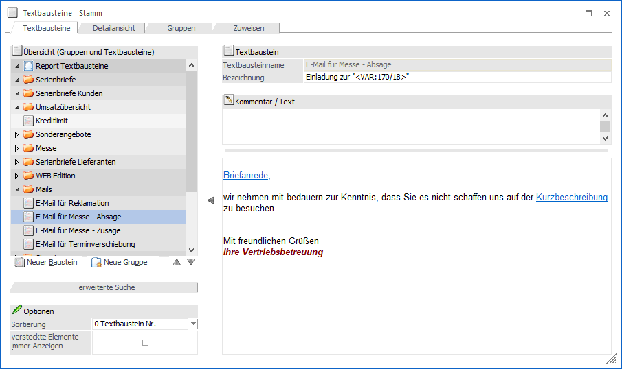
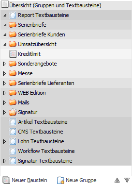
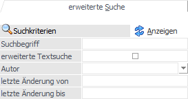
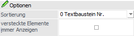
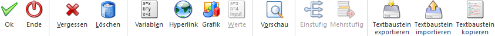
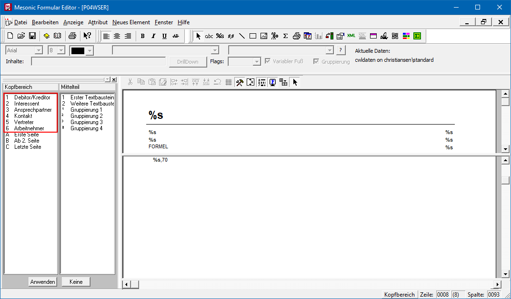

1 WinLine START
1 Optionen
1 Textbausteine
1 Textbausteine
… können allgemeine Textbausteine angelegt bzw. verwaltet werden. Es handelt sich dabei um all Textbausteine, die abseits der WinLine FAKT, in den folgenden Bereichen, zu Einsatz kommen:
ü WinLine WebEdition
ü WinLine CRM (u.a. Postausgangsbuch, Workflows)
ü WinLine FIBU (u.a. MAPRO)
ü WinLine LOHN
ü WinLine LIST
Achtung
Die Bearbeitung eines Textbausteines kann zur selben Zeit nur durch einen Benutzer erfolgen.

Das Fenster "Textbausteine" ist in mehrere Register unterteilt, welche in den nachfolgenden Kapiteln detailliert beschrieben werden:
ü Register Textbausteine
In diesem Register
können die Texte der Textbausteine hinterlegt bzw. angepasst werden.
ü Register Detailansicht
In dem Register
"Detailansicht" werden weitere Informationen zu dem ausgewählten Textbaustein
angezeigt, wobei auch manuelle Hinterlegungen möglich sind.
ü Register Gruppen
In dem Register "Gruppen"
werden weitere Informationen zu der ausgewählten Textbausteingruppe angezeigt,
wobei auch manuelle Hinterlegungen möglich sind.
ü Register Zuweisen
In diesem Register können
bestehende Textbausteine zu Textbausteingruppen zugewiesen werden.
Der linke Bereich des Fensters ist, mit Ausnahme des Register "Zuweisen", immer gleich aufgebaut und besteht aus den folgenden Teilen:
ü einer Übersicht
ü einer Suche
ü diversen Anzeigeoptionen
Bereich "Übersicht (Gruppen und Textbausteine)"

Auf der linken Seite werden in einer Übersicht alle bereits vorhandenen Textbausteingruppen mit deren Textbausteinen angezeigt, wobei die oberste Ebene der Struktur vom Programm her fix vorgegeben ist. Diese Struktur umfasst die folgenden Rubriken:
ü Report Textbausteine
In dieser
Rubrik werden Textbausteine für das Reportwesen, das Postausgangsbuch und für
den Listgenerator verwaltet.
ü Artikel Textbausteine
Wird
derzeit noch nicht unterstützt.
ü CMS Textbausteine
In dieser
Rubrik werden Textbausteine für das Content Management System (Bestandteil der
WebEdition) verwaltet.
ü Lohn Textbausteine
In dieser
Rubrik werden Textbausteine für das Bescheinigungswesen im WinLine LOHN A
verwaltet.
ü Workflow Textbausteine
Wird
derzeit noch nicht unterstützt.
ü Signatur Textbausteine
In
dieser Rubrik werden Textbausteine für die Signatur von E-Mails verwaltet. Diese
stehen im Postausgangsbuch zur Verfügung.
Die Textbausteingruppe dient also der Zusammenfassung von mehreren Textbausteinen, wobei mit den Textbausteingruppen mehrere Ebenen (bis zu 9) verwaltet werden können.
Die Übersicht selber zeugt hierbei nicht nur alles vorgegebene und Angelegte an, sondern man kann per Drag & Drop auch Textbausteingruppen oder Textbausteine verschieben.
Zusätzlich werden unterhalt der Übersicht 4 Buttons zur Verfügung gestellt.
Ø Neue Gruppe
Durch einen Klick auf den Button "Neue Gruppe" kann eine neue Textbausteingruppe angelegt werden, wobei die Gruppe bei der Textbausteingruppe angelegt wird, welche gerade aktiviert ist (weitere Details entnehmen Sie bitte dem Kapitel Textbausteine - Register "Gruppen").
Ø Neuer Textbaustein
Mit Hilfe des Buttons "Neuer Textbaustein" kann ein neuer Textbaustein angelegt werden. Dieser wird dabei in jener Textbausteingruppe angelegt, von der aus die Neuanlage aufgerufen wurde (weitere Details entnehmen Sie bitte dem Kapitel Textbausteine - Register "Textbausteine").
Ø nach oben verschieben / nach unten verschieben
Wenn ein bestehender Textbaustein von einer Gruppe in die andere Gruppe verschoben werden soll, so kann dieses mit Drag & Drop durchgeführt werden.
Verschieben von Textbausteinen innerhalb einer Gruppe kann wiederum mit Hilfe dieser Buttons erfolgen.
erweiterte Suche

Durch Anwahl des Unterregisters "erweiterte Suche" stehen Eingabemöglichkeiten zur Verfügung, womit nach bestimmten Textbausteinen gesucht werden kann:
Ø Suchbegriff
In diesem Feld kann jener Text angegeben werden, nach dem gesucht werden soll. Die Suche erfolgt in den Feldern "Textbausteinname" und "Bezeichnung".
Ø Volltextsuche
Wird die Option "Volltextsuche" aktiviert, so erfolgt die Suche des angegebenen Begriffs innerhalb der Felder "Kommentar" und "Text".
Ø Autor
Aus der Auswahlliste kann ein Autor gewählt werden, der im Textbaustein hinterlegt sein soll; d.h. nach dem gesucht werden soll. Auswählbar sind jene "Autoren", welche auch tatsächlich in einem Textbaustein hinterlegt sind.
Ø letzte Änderung von / letzte Änderung bis
Mit Hilfe dieser Selektion kann die Eingrenzung aufgrund des Felds "letzte Änderung" erfolgen.
Ø Anzeigen
Durch Anwahl des Buttons "Anzeigen" wird die Suche gestartet und die Übersicht der Gruppen und Textbausteine aktualisiert.
Hinweis
Es werden nur jene Textbausteingruppen angezeigt, zu denen Textbausteine gefunden wurden.
Optionen

Ø Sortierung
Aus der Auswahlliste kann gewählt werden, wie die Anzeige der Textbausteine in der Übersicht sortiert werden soll (die Gruppenanordnung wird hiervon nicht beeinflusst). Folgende Möglichkeiten stehen zur Verfügung:
ü 0 - Textbaustein Nr.
Es handelt
sich dabei um jene Nummer, welche zum Textbaustein im Register "Detailansicht"
angezeigt wird.
ü 1 - Textbaustein Name
Die
Sortierung erfolgt anhand des Textbausteinnamens.
ü 2 - interne Nummer
Die
Sortierung erfolgt nach der Nummer der aktuellen Sortierreihenfolge; jene Stelle
an welcher der Textbaustein aktuell gereiht ist.
Ø versteckte Elemente immer anzeigen
Ist diese Option aktiviert, dann werden die im Textbaustein hinterlegten Variablen, Grafiken, Hyperlinks und Werte vollständig dargestellt, wobei dann auch spezielle Formatierungs- oder Rechenanweisungen (Parameter) mit angezeigt werden. Diese speziellen Einträge sollten nicht unbedacht verändert werden!
Hinweis
Wenn die Option "versteckte Elemente immer anzeigen" aktiviert ist, können im String der Variable noch die Formatierung des Andrucks bzw. der Anzeige mittels Befehl "FORMAT:" und eine mathematische Berechnung mittels "FORMULA" mitgegeben werden.
Beispiel
Die Variable 400/116 (Beschäftigungsstunden pro Woche) wird normalerweise in Textbausteinen nur in Ganzen Werten angedruckt. Wenn z.B. 38,5 Beschäftigungsstunden pro Woche im LOHN eingetragen wurde, wurde die Variable als "3850" angedruckt. Wenn jetzt gewünscht ist, dass diese Zahl im Stundenformat mit Nachkommastellen angedruckt wird, muss die Variable im Textbaustein wie folgt definiert sein:
[VAR:116;VIEW:400;FORMAT:###.#;FORMULA:<400/116>/100;LINK:Beschäftigungsstunden pro Woche]
Mit diesem Eintrag wird der Wert 38,5 angedruckt, weil das Format ###.## und die Formel mittels FORMULA:<400/116>/100 (Die Variable selbst dividiert durch tausend) mitangegeben wurde.
Buttons

Ø Ok / Speichern
Durch Anklicken des Buttons "Ok" bzw. der Taste F5 wird der Textbaustein bzw. die Textbausteingruppe gespeichert.
Hinweis
Befindet man sich im Register "Zuweisen", so lautet der Text des Buttons "Speichern". Die Anwahl bewirkt in diesem Fall das Speichern der neuen Gruppenzuweisung für die Textbausteine.
Ø Ende
Durch Drücken des Buttons "Ende" bzw. der Taste ESC wird das Fenster geschlossen und nicht gespeicherte Eingaben verworfen.
Ø Vergessen (nicht im Register "Zuweisen")
Durch Anklicken dieses Buttons bzw. der Taste F4 werden alle Inhalte des Fensters verworfen, d.h. auch eine Neuanlage eines Bausteins oder einer Gruppe abgebrochen.
Ø Löschen (nicht im Register "Zuweisen")
Durch Anwahl des Buttons "Löschen" wird der gerade aktive Textbaustein bzw. die ganze Textbausteingruppe (mit allen enthaltenen Textbausteinen) gelöscht.
Ø Variablen (nicht im Register "Zuweisen")
Textbausteine können auch als Vorlagen für Serienbriefe verwendet werden. Dazu können über den Button "Variablen" eigene Platzhalter eingefügt werden. Details hierzu entnehmen Sie bitte dem Kapitel Variable einfügen.
Ø Hyperlink (nicht im Register "Zuweisen")
Durch Anklicken des Buttons "Hyperlink" kann ein Link, d.h. ein Verweis, in den Textbaustein eingefügt werden, wobei unterschiedliche Typen angeboten werden. Details hierzu entnehmen Sie dem Kapitel Textbaustein - Hyperlink einfügen.
Hinweis 1
Die Link Typen "Textbaustein", "Textbausteingruppe", "Eigenschaft" und "CMS-Publikation" können nur in der WebEdition verwendet werden. Der "Hyperlink" findet hingegen auch in z.B. Serienmails Verwendung.
Hinweis 2
Wurde in den Textbaustein ein Hyperlink eingebaut, dann wird dieser blau und unterstrichen dargestellt. Wenn solch ein Eintrag angeklickt wird, dann kann der Hyperlink bearbeitet werden.
Ø Grafik (nicht im Register "Zuweisen")
Mit dem Button "Grafik" können Grafik-Dateien in den Textbaustein eingebunden werden. Details hierzu entnehmen Sie bitte dem Kapitel Textbaustein - Grafikeinstellungen.
Ø Werte (nicht im Register "Zuweisen")
Bei Verwendung von Lohn-Textbausteinen können auch Daten aus den Abrechnungswerten herangezogen werden (wird derzeit nur für den österreichischen LOHN unterstützt). Um diese Daten einfügen zu können, gibt es den Button "Werte". Details hierzu entnehmen Sie bitte dem Kapitel Textbaustein - Lohnwerte.
Ø Vorschau (nicht im Register "Zuweisen")
Durch Anklicken des Buttons "Vorschau" kann eine Vorschau des Textbausteines angezeigt werden. Eingebundene Variablen oder Werte werden dabei allerdings nicht mit Daten ausgefüllt, sondern es werde nur die Platzhalter dargestellt.
Ø Textbaustein exportieren (nicht im Register "Zuweisen")
Durch Anwählen eines Textbausteines und anschließendem Drücken des Buttons "Textbaustein exportieren" kann der Baustein exportiert werden. Dabei wird eine Datei mit der Endung "mtb" (mesonic Text Block) erzeugt, deren Name, sowie der Speichertort, frei bestimmt werden kann. In dieser Datei werden die Werte folgender Felder in verschlüsselter Form gespeichert:
ü Textbausteinname
ü Bezeichnung
ü Kommentar
ü Text
Ø Textbaustein importieren (nicht im Register "Zuweisen")
Um einen Textbaustein, welcher aus einer WinLine-Installation exportiert wurde (MTB-Datei), zu importieren, muss die gewünschte Textbausteingruppe gewählt (d.h. den Focus daraufsetzen) und der Button "Textbaustein importieren" gedrückt werden. In dem sich öffnenden Datei-Dialog kann die zu importierende Datei dann gesucht und ausgewählt werden.
Ø Textbaustein kopieren (nicht im Register "Zuweisen")
Mit Hilfe dieses Buttons wird eine temporäre Kopie des zuletzt ausgewählten Textbausteins erzeugt. Die Speicherung des Bausteins erfolgt dann durch Anwahl des Buttons "Ok" bzw. der Taste F5.
Hinweis
Für die Funktion des Serienbriefes bzw. zum Ausdruck dieses steht das Formular (PDF) mit der Nummer "P04WSER" zur Verfügung. Nachdem ein Serienbrief verschiedene Typen von Konten enthalten kann (Personenkonten, Interessenten, Ansprechpartner, Kontakte, Vertreter und Arbeitnehmer) gibt es im erwähnten Formular die Möglichkeit die zu befüllenden Variablen für die verschiedenen Typen (mittels verschiedener Flags) auch unterschiedlich zu hinterlegen/gestalten.
